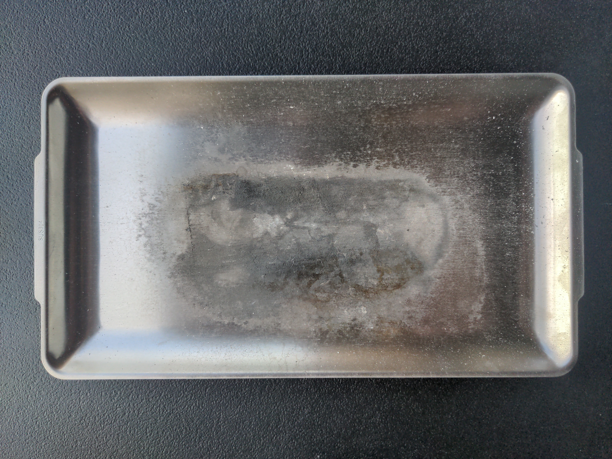
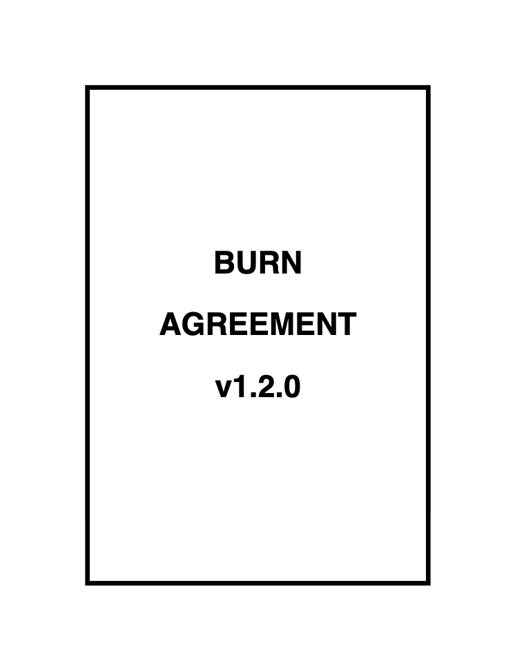
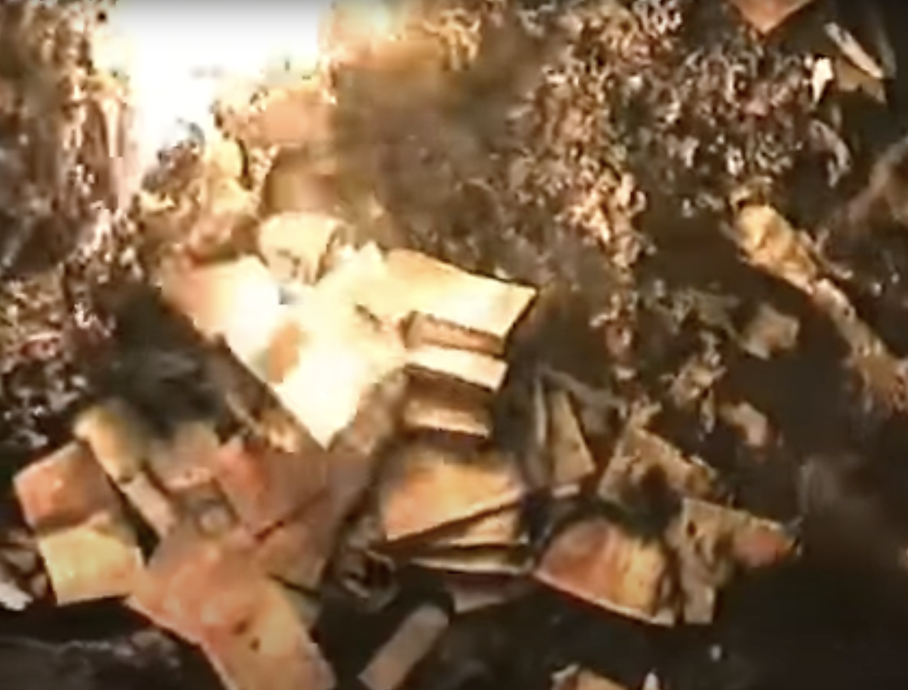
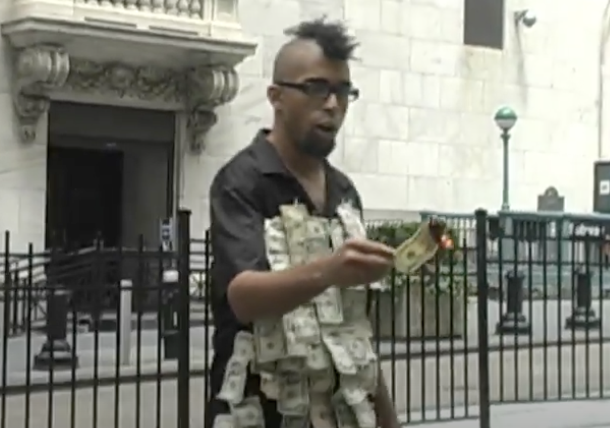
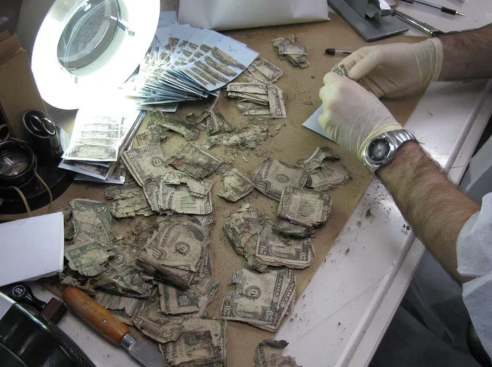
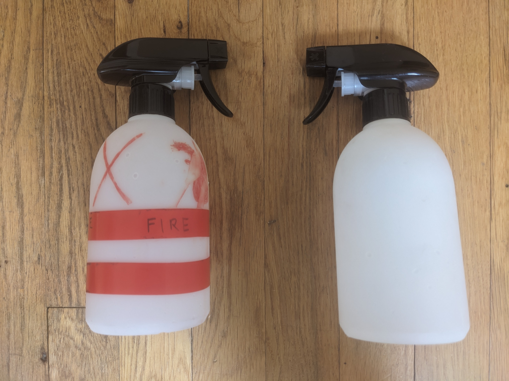
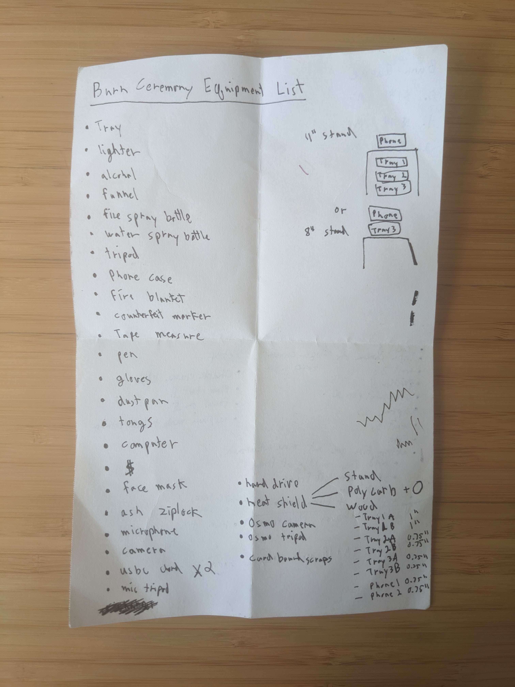
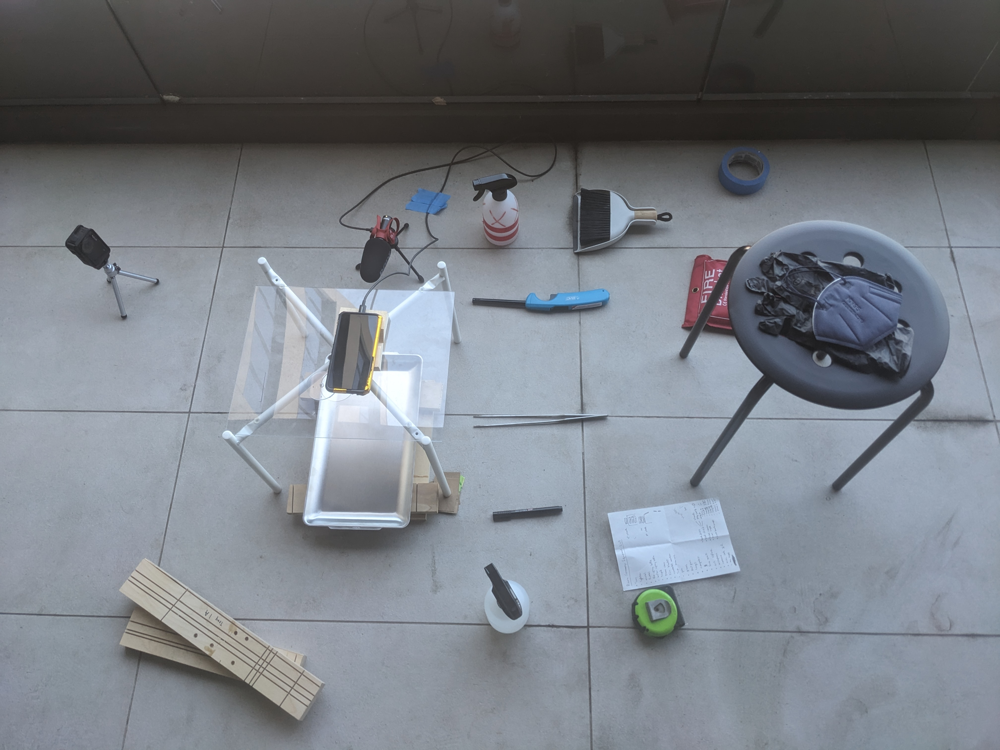
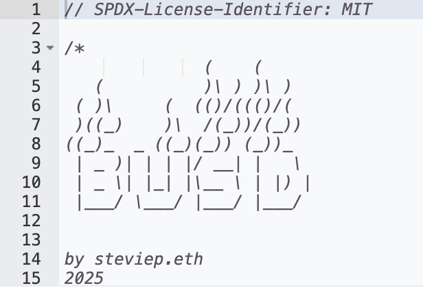
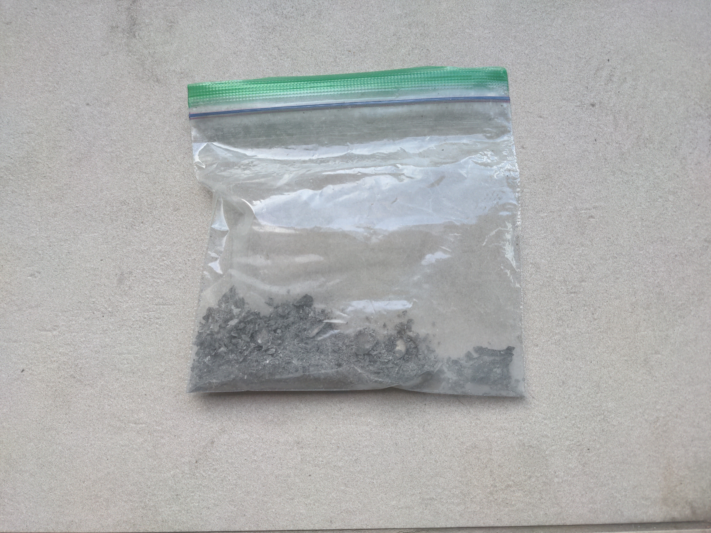

How To Set $2,455 on Fire
Steve Pikelny - 9/21/25
Last week I set $2,455 in US bank notes on fire. The idea was simple:
- Participants give me US currency
- I burn it
- I issue bUSD (an ERC20 token) to them at a one-to-one rate with the bill's denomination
If you give me a $100 bill, I set it on fire and issue you 100 bUSD.
The burning itself consisted of 41 bills, and took me about five and a half hours from start to finish. But bringing this idea to fruition took more time and work than one might expect. I came up with the concept in early 2022, and ended up mulling it over for three and a half years. Of all my art projects, this one took the longest to execute by far.
By design, the implementation details are largely pushed into the background. I want the viewer's immediate reaction to be about the money disintegrating in front of them, not about the logistics of filming. But now that the first burn session is over I wanted to stop to shed some light on the overall process. After all, burning thousands of dollars in cash looks easy, but the devil is in the details.

1. Isn't Burning Money Illegal?
Burning United States currency is a misdemeanor. United States Code Title 18 (CRIMES AND CRIMINAL PROCEDURE), Part I (CRIMES), Chapter 17 (COINS AND CURRENCY), Sec. 333 (Mutilation of national bank obligations) states:
Whoever mutilates, cuts, defaces, disfigures, or perforates, or unites or cements together, or does any other thing to any bank bill, draft, note, or other evidence of debt issued by any national banking association, or Federal Reserve bank, or the Federal Reserve System, with intent to render such bank bill, draft, note, or other evidence of debt unfit to be reissued, shall be fined under this title or imprisoned not more than six months, or both.
I've playfully danced around 18 U.S.C. § 333 in previous projects, but this one is pretty straightforward. From the outset, I had to be comfortable committing a clearly documented federal crime.
The Secret Service was founded in 1865 to combat counterfeiting of US currency, and was a division of the US Treasury until 2003. Their purview expanded over time to include other financial and currency-related crimes (along with protecting the President and presidential candidates). This means that my first step was reminding my mom of her constitutional right to not cooperate with the SS if they ever knocked on her door looking for me. She didn't find this scenario as amusing as I did.
I'd be lying if I said I didn't engage in some mild daydreaming about being imprisoned for six months for burning some money. After all, it would probably be a boon to my art career. But upon further research it seemed fairly unlikely. Between ChatGPT and Google, I had trouble digging up cases where this was actually prosecuted. I was only able to find one well documented case of a former Marine who whittled away the edges of pennies in an attempt to pass them off as dimes in 1963. He was fined $20, given one year of probation, and ultimately pardoned by Obama in 2010 so he could obtain a gun license. Wikipedia also had some interesting musings on the legality of burning money in the US, but cited no cases of the statute ever being applied.
I also talked to a couple of lawyers about the project, and they similarly concluded that I was unlikely to run into any legal consequences with this. The First Amendment would probably be a good defense, as artistic expression in this manner could be considered protected speech. More importantly, the SS probably has better things to do than come after me for burning a few thousand dollars in cash.
2. Tax Implications
It's dramatic and sexy to get thrown in jail for making politically transgressive art. But it's neither dramatic nor sexy to be fined by the IRS or penalized for tax evasion.
Once the headline legal concerns were out of the way I stumbled upon a pretty hairy tax issue with the mechanics of all this. Let's say someone sends me $100.00 through Venmo, wire transfer, check, or crypto. Then I go to the bank, withdraw a $100 bill, and set it on fire. In this scenario I've just incurred $100 in taxable income. But destroying US currency is illegal, so burning the physical bill is not a valid business expense. I would be on the hook to pay taxes on the initial $100.00 digital transaction... and would then not actually have that $100.
This ended up being the biggest blocker of the project. It took me the better part of a year and a half to figure out. Eventually, I realized that this would only work if I'm not burning my money. I needed to establish the fact that I'm burning your money. So, I decided to do two things. First, I would only accept physical cash from people, either via mail (which turns out to not be illegal) or in person. Second, I would have each participant sign a legal agreement that establishes them as the rightful owner of the bill. I'm simply performing a service on the bill for them. This would come with all sorts of stipulations about how they can get the money back before I burn it. It is their money, after all.

The final Burn Agreement addresses all of these issues, and addresses various interesting questions, such as: What happens if I die before the money is burned? What happens if I grant someone else the ability to issue bUSD? What happens if my wallet is compromised and a bunch of fraudulent bUSD is issued? What happens if someone sends me an ineligible bill?
In any case, I ran this all by my accountant, who helped me think through this with the following example:
As a cash basis company constructive receipt occurs when money or goods are received in exchange for services. Someone giving you something for use in said service, is not payment for services rendered. I would think of it like someone who gets a bowling ball drilled. You give the professional the ball, no income is recognized (cash of fmv). He drills the ball (performs a service) income is then recorded (whether you pay in cash or some sort of product).
Easy. Just like drilling holes in a bowling ball.
So, whenever someone complains that they can't just Venmo me the money to set on fire, I tell them it's a tax thing. Of course, this makes it a lot more difficult to fundraise. It's easy to send money through a digital transaction. It's difficult to find me in person, or worse, physically mail me something.
3. Fundraising
Convincing people to give me money to set on fire was actually the easiest part of this project. As an artist who has focused on the aesthetics of money, scams, and arcane financial instruments, I know a lot of people who are willing to play along with my stupid ideas. But it's hard to convey what I was getting at with a wall of text. If I was going to convince people to participate sight unseen, I needed to hit the bricks and pitch them in person.
Thankfully, this project hit critical momentum by the time NFT NYC 2025 rolled around. I would have a full week to schmooze with people used to wasting their money, and then tell them about this new and exciting way for them to waste their money. I set myself a $1,000 fundraising goal and got to work.
I had the best luck at events with a lot of people who already knew me and were drinking a lot. Every time someone asked me what I was working on I gave them my pitch. A surprising number of people happened to be carrying around large denomination bills, and were willing to entrust them to me inside of 30 seconds. I also streamlined the process by carrying around a backpack full of Burn Applications that they could sign on the spot. Things usually snowballed from there. Once one drunk person starts waving around cash and excitedly filling out paperwork, other drunk people become curious and want to know more.
I blew past my goal and raised about $2,000 in three days. Now I just needed to burn it all.
4. The Burn Ceremony
I'm not the first person to burn money for artistic reasons. The K Foundation famously burned 1 million GBP, Dread Scott burned $171 while singing in front of the NY Stock Exchange, and Eric Paulos allowed 1996 website visitors to remotely perforate a $100 bill with robotics. These are all great projects, but their methods for actually burning the money accomplish very different goals. By continuously shoveling piles of money into a furnace for an hour, the K foundation put an emphasis on the sheer monetary value they were destroying. Scott's theatrics drew attention to the absurdity of what he was doing. Paulos put a strong emphasis on dissecting the legal implications, but otherwise did not leave much in the way of clear documentation.


Alternatively, I wanted to give each bill a dignified death with clear documentation. The project's internal logic requires a clear connection between the physical bill's destruction and the creation of a new digital object in its place. It was important that each bill's destruction was slow and methodical, without leaving much room for speculation that this was faked.
Furthermore, the bill needed to be completely destroyed. The US Bureau of Engraving & Printing provides free mutilated currency redemption services in which individuals and businesses can redeem damaged currency at face value. The BEP website states that bills can be redeemed if either (1) more than 50% of the bill is clearly present, or (2) less than 50% of the bill is present, but supporting evidence demonstrates to a BEP investigation that the remaining portions have been totally destroyed. This means that the conceptual underpinning of the project would be destroyed if I only burned a portion of a bill and redeemed the remains with the BEP. The monetary value would then be represented in multiple forms instead of clearly being transmuted to a single blockchain-based representation.

So I decided that each bill would receive its own Burn Ceremony, in which the viewer could observe its destruction from start to finish. The Ceremony would consist of the following steps:
- The bill would be placed face up on a metal tray such that the serial number was clearly visible.
- I would mark the bill with a counterfeit detection pen to prove its authenticity.
- I would spray the bill with alcohol, mainly acting as an accelerant, but also providing a ritualistic cleansing.
- I would ignite the bill and leave it to burn completely.
- I would reignite the fire if it went out, repeating this step until the bill was burned completely.
- I would submit a blockchain transaction issuing the bUSD along with an NFT of the Proof of Burn video.
Now that I had a gameplan it was time to actually burn the money.
5. Actually Burning the Money
Paper is obviously very flammable, but it's surprisingly difficult to consistently and aesthetic film it burning. Most footage I've found of money being burned involved the burner holding the bill with their hand, and the camera being positioned far away. In order to get the clear and aesthetic documentation feel I wanted, I would need to position the camera directly over the burning bill lying flat on a tray.
This presented a few difficulties. While conducting test burns I had trouble burning the entire bill. Even after I sprayed it with ethyl alcohol, which is highly flammable and provides a clean burn, the fire would often go out with half of the bill remaining. When the bill lies flat on the tray there isn't enough oxygen to sustain a lasting flame. I tried positioning the bill on top of something else, but found that too distracting once that something else was revealed. I also tried crumbling the bills, but that didn't look very good either. I eventually decided to use tongs to lift the bill for subsequent burns. And after much trial and error, I discovered that slightly curling the top and bottom of the bill added some much needed breathing room without being very visible to the camera.
For aesthetic, convenience, and budgetary reasons I chose to shoot the footage on a Pixel 4a phone. It's fairly cheap ($190), versatile, and shoots in 4k. But the fact that it only has a crappy looking digital zoom instead of an optical zoom meant that I needed to position it about 11" above the open flame to get the shot I wanted. This was fine when shooting one or two test burns, but I started getting heat warnings after burning multiple bills in succession. Between this, the internal phone heating, and the summer heat, this became a problem.
At ChatGPT's suggestion I started off buying a phone case and wrapping it with gold reflective tape, which ended up being a waste of money. Then I built a heat shield out of a metal nightstand I found on the street and a polycarbonate sheet. That took a lot of the edge off, as did waiting until the weather cooled off. After taking these precautions I got fewer heat warnings! Ultimately I resorted to throwing my phone in a freezer for a few minutes when things got too heated. Out of 41 shots my phone only shut off once, resulting in some lost footage. Not great, but I suppose a 97.5% success rate is fine.
Burning money also produces a lot of smoke. This means that doing the Burn Ceremonies indoors wasn't really feasible, and doing it outdoors brings a host of issues, including: over exposure to sunlight, wind, temperature, noise, internet access, and the prying eyes of the public. Thankfully, I found a willing friend who let me use their deck, where the light, wind, internet, and privacy issues weren't huge concerns. The final recordings still have some ambient sound, but I was able to reduce this to some extent with a directional microphone. The deck was also mostly absent of flammable materials, but I made sure to bring a fire blanket and a water spray bottle.

For aesthetic and hygiene reasons I also chose to wear black nitrile gloves for filming. But at the end of each Burn Ceremony I had to run a blockchain transaction on my laptop. I'd built a web interface to streamline the process, but during one of the test burn sessions I realized that the gloves made it a lot harder to get anything done. This, along with keeping all the paperwork straight, was error prone, and added an extra layer of context switching on top of everything else I had to keep track of. So I ended up preloading the data into the interface such that I could run the transaction in two clicks. This easily shaved one to two minutes off each burn, and probably saved me more than an hour on the burn day.
In all, there were also a lot of boring little items I needed to use to solve all the little problems that popped up in testing: long neck lighters, various tripods, various cords, a tiny dustpan, tape, ziplock bags etc. It started simple, but my equipment list quickly grew to keep track of everything I needed.


6. $bUSD and the Proof of Burn
Everyone who gave me money to burn received bUSD and a Proof of Burn NFT. bUSD is an ERC20 token issued on Ethereum L1. This means that I was able to easily set up a liquidity pool with my own personal bUSD and USDC. I know that Solana is the home base for stupid memecoins, but this project required some custom smart contract work that I couldn't get out of the box on something like pump.fun. Ethereum has a much better smart contract ecosystem, and all of my other work is there, so it was the obvious choice.
You can read the bUSD and Proof of Burn contracts on Etherscan here and here.

I also wanted to index the videos of the Burn Ceremonies, so I created an NFT collection, Proof of Burn. Each token logs the denomination, the serial number, and the timestamp of their respective burn. It also attaches a session ID to each one. This all serves two purposes. First, it creates a slightly more digestible art object. Even though bUSD is nominally the point of this whole project, I understand that most people will experience it through videos of US currency burning and really just want to collect the NFT. Second, the NFT acts as a security measure if bUSD is ever fraudulently issued. In the event my wallet is ever compromised, or greed gets the better of me, bUSD could theoretically be issued without a corresponding Burn Ceremony. If this ever happens, then the contract allows NFT holders to burn their NFT plus the amount of bUSD corresponding to the denomination. A separate smart contract could then issue a new token (Burnt bUSD) in accordance to all validly issued and burned Proof of Burn NFTs and bUSD. Everyone who owns a Proof of Burn from an invalid session would not be able to get the new token. I also figure that this could be a good way to bridge bUSD: Someone could burn the bUSD on L1 and mint Bridged bUSD (or Based bUSD on Base).
Managing the media for the NFTs was a bit of a pain. I shot all the footage in 4k, but this left me with 41 humongous files that I couldn't easily or cheaply host anywhere. I also made a mistake framing my shots and needed to crop all the footage. I ended up using ffmpeg to downsize and crop everything, which was pretty painless. The NFTs were originally minted with placeholder SVGs, but after I pinned the cropped 1080p videos to IPFS I connected all the metadata.
7. Lessons Learned
There are probably close to zero actionable insights for anyone reading this. Setting a bunch of money on fire and filming it is an admittedly niche activity. But I would say that the one big takeaway is that testing for these sorts of projects is incredibly important, especially when you're working outside of your comfort zone. When I explained my process to some people they would reply with "oh, that's really smart." I had to explain to them: no, it's not smart, I'm doing this because I already tried it out and fucked something up. I was able to preempt a few things, but most of this process was due to trial and error.
8. Can You Burn Some Money for Me?

If you read this article and thought "Man, I really wish Steve would burn some money for me," then you're in luck! All you need to do is read the Burn Agreement, fill out a Burn Application, and mail that, along with your bill and processing fees, to: